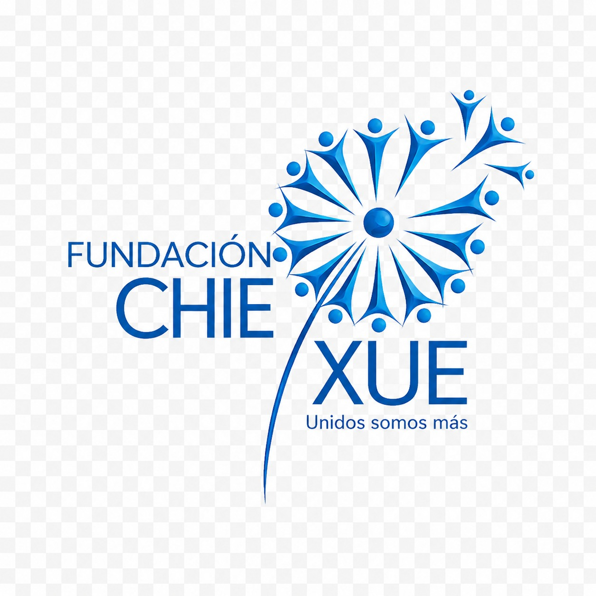

"Unidos somos más"
Somos una entidad privada sin ánimo de lucro constituida legalmente como fundación, comprometida con el tejido social de la comunidad. Promovemos el bienestar integral mediante la ejecución de proyectos benéficos, educativos, culturales y de intervención social.
Liderazgo Institucional:
Contribuir activamente al desarrollo de programas de educación, salud, cultura y otros aspectos fundamentales que beneficien a la sociedad en general, fomentando el bienestar comunitario con un fuerte sentido ético y solidario.
Consolidarnos como una organización líder y referente en el desarrollo de iniciativas sociales y de emprendimiento en Bogotá, expandiendo nuestro impacto positivo en comunidades vulnerables bajo criterios de sostenibilidad.
Trabajamos enfocados principalmente en niños, jóvenes y familias pertenecientes a comunidades en condición de vulnerabilidad, generando espacios de inclusión, igualdad de derechos y oportunidades para mejorar su calidad de vida.
En cumplimiento de nuestro objeto social, estructuramos e impulsamos las siguientes líneas de acción:
Por medio de nuestra gestión territorial y comunitaria en Bogotá, desarrollamos actividades orientadas a disminuir brechas sociales, incentivando la participación activa de los ciudadanos y consolidando redes de apoyo locales sostenibles.
Tu aporte multiplica las oportunidades para nuestra comunidad. Conforme a nuestros estatutos, el patrimonio de la fundación se encuentra afectado al cumplimiento de su actividad meritoria.
¿Cómo apoyar? Recibimos auxilios, donaciones de personas naturales o jurídicas y alianzas estratégicas. Contáctanos para conocer los canales de transferencia autorizados.
NIT: 901.778.247-1
Directora: Nathalia Ayala
Subdirectora: Karen Hernandez
Dirección: Cr 78J Bis #50-24 Sur
Localidad: Kennedy, Bogotá
Teléfono: 312 692 8336
Correo: nataliaayala574@gmail.com
Conoce más sobre nuestra labor:
Visita nuestra Web